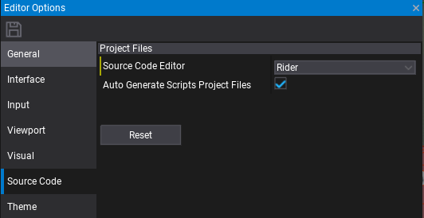
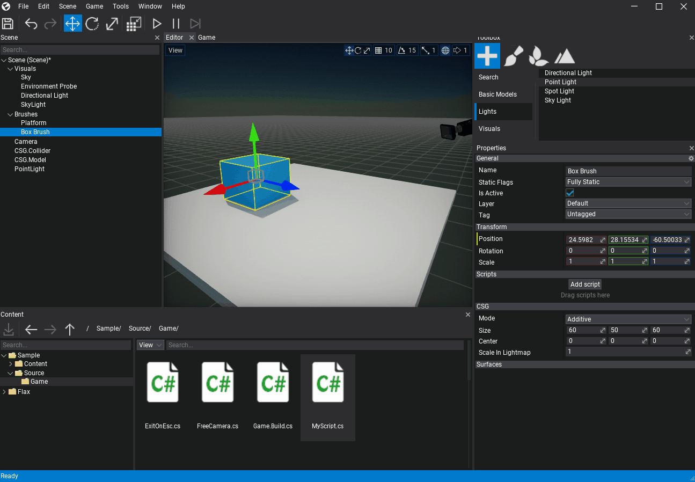
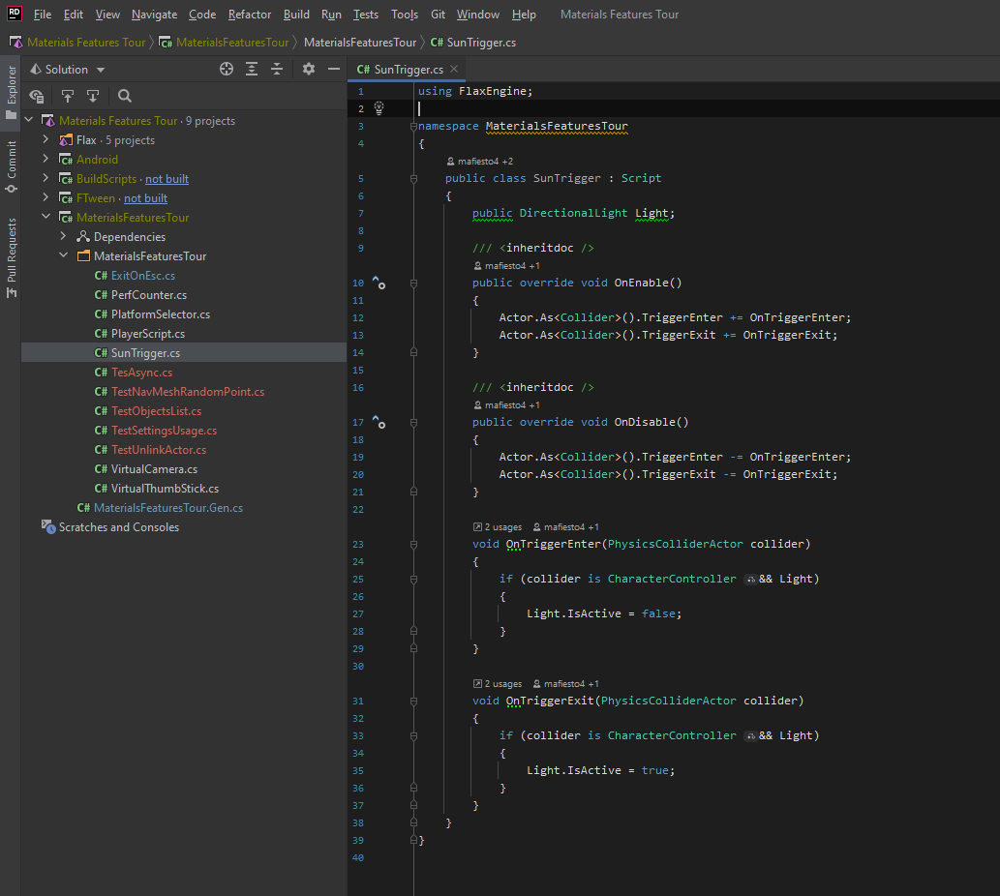
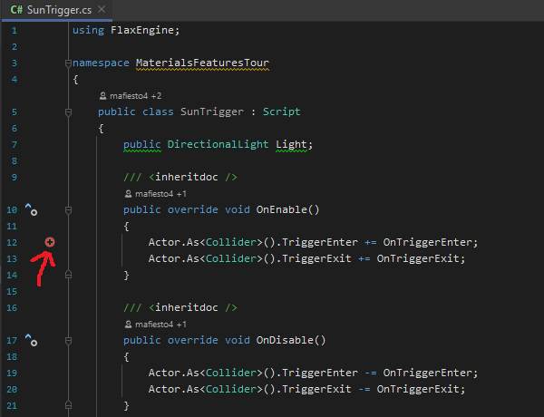
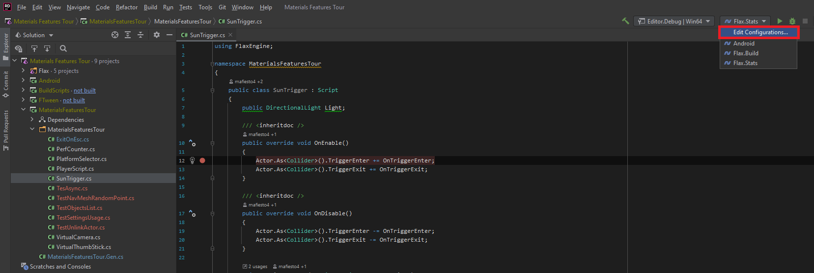
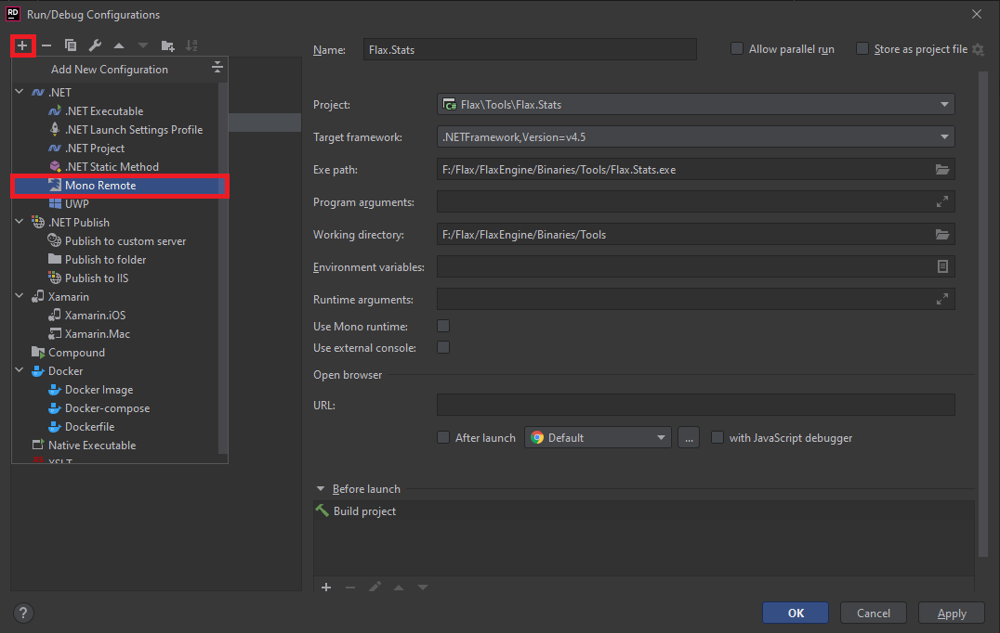
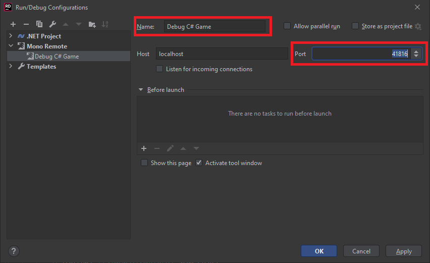
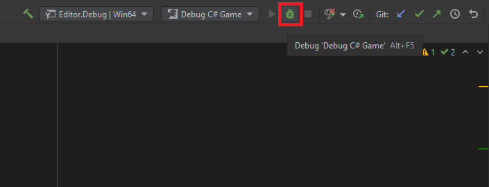
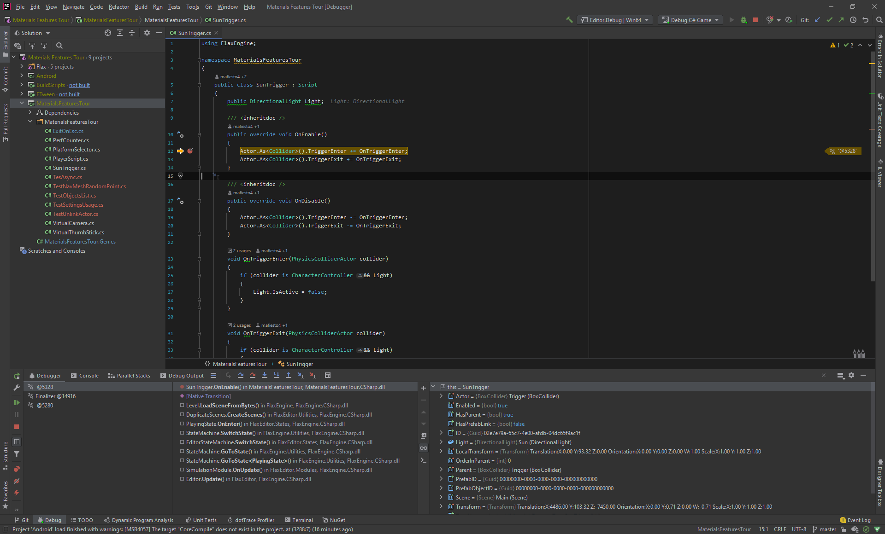

Rider
You can download Rider here.
1. Change source code editor

Open Flax Editor, go to Tools -> Options in main menu to open editor options windows. Then select Source Code tab and set Source Code Editor to Rider. If this option is missing, then ensure you have Rider installed. Confirm with the Save button to apply changes.
2. Attach script to actor
To debug script code it has to be attached to the actor in the scene. Simply drag and drop it into the selected actor properties area.

3. Open script in Rider
Double-click on a script item and wait for the IDE to show up.

4. Add a breakpoint
Click on a left side of the code editor to assign a breakpoint to the line. Red dot should be added as shown in the picture below.

5. Find debugger port
To attach with C# debugger to Flax you will need to know the debugger port. This can be checked in the log file of the engine from <project>\Logs - see the latest file and find the line similar to the following:
...
[ 00:00:02.667 ]: [Info] Initialize Scripting...
[ 00:00:02.667 ]: [Info] Mono debugger server at 127.0.0.1:41816
...
This informs about the Mono debugger server running on a local machine and the given port. It's calculated from expression 41000 + process_id % 1000. You can also run Flax Editor with specified ip and port with a command-line argument such as -debug 127.0.0.1:55555.
6. Add configuration
Once you know the port you can create configuration of type Mono Remote. Use Edit Contiuration button and select + plus button to create new confgiuration for Mono Remote debugging.


Then name it eg. to Debug C# Game and set Port to the value from the editor log.

You can run Editor from command line eg. FlaxEditor.exe -project project_path -debug 127.0.0.1:50000 to use fixed Mono debugger port.
7. Attach to Flax
Once you've set the port you can launch this configuration and attach with debugger.

8. Start a game
Go back to the Flax Editor and press the Play button to start a game. Then script OnUpdate() function will be called and assigned breakpoint hit.

8. Debug your code
Now you can use all Rider debugging features to verify state of the variables and test your code.

For more information about C# in Rider, see the Rider documentation.